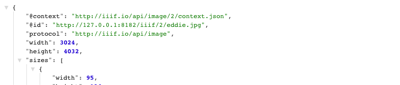

Setting up Cantaloupe IIIF Image Server
Make sure you have installed the prerequisites.
Download Cantaloupe
For more information, checkout the Cantaloupe getting started guide.
Download Cantaloupe v3.4.2
Open and extract the zip file to your directory of choosing. We suggest ~/Desktop.
Now change directory to that extracted directory
$ cd ~/Desktop/Cantaloupe-3.4.2
Configure Cantaloupe
Now lets create a copy of the configuration file:
$ cp cantaloupe.properties.sample cantaloupe.properties
Now lets enable the admin panel where we will modify the rest of the settings.
Scroll to line 104, and change false to true. Also add a password.
# Enables the Control Panel, at /admin.
- admin.enabled = false
+ admin.enabled = true
- admin.secret =
+ admin.secret = yolo
Save the file.
Now lets try and start the server. Run this command from your Cantaloupe directory
$ java -Dcantaloupe.config=./cantaloupe.properties -Xmx2g -jar Cantaloupe-3.4.2.war
Now navigate to http://127.0.0.1:8182/iiif/2 in your browser.
You should see this:

Congrats you successfully installed Cantaloupe!
Also make sure you can get into the admin panel by navigating to http://127.0.0.1:8182/admin.
Use the username admin and the password you set previously.

Configuring Cantaloupe to use your images.
Congrats now you have your image server up and running! We need to feed it some images to keep it happy!
Download some images
Go ahead and download a *.jpg image from the Internet into your Cantaloupe directory Cantaloupe-3.4.2. Here is one eddie.jpg that you can use.
Configure Cantaloupe to use the correct path
Now we need to configure Cantaloupe to use that image directory.
Navigate to the admin page http://127.0.0.1:8182/admin.
Click on "Resolver", then click "FilesystemResolver" tab.
Next fill in Path Prefix to be ./

Check it out in the browser
Now you should be able to navigate to an image's info.json response successfully.
Checkout http://127.0.0.1:8182/iiif/2/eddie.jpg/info.json
And if everything goes right, you should see an info.json response.

Let's finally check it using the Leaflet-IIIF image api viewer.
Try this url: http://mejackreed.github.io/Leaflet-IIIF/examples/?url=http://127.0.0.1:8182/iiif/2/eddie.jpg/info.json
Notice how we added our local IIIF server's info.json response url as a parameter. This is used by IIIF Image API clients to understand how they can request images/tiles.

Cross our fingers, but you should see a picture of Eddie in a zoomable viewer.